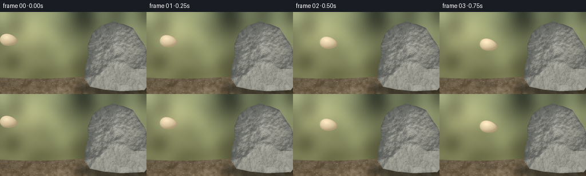
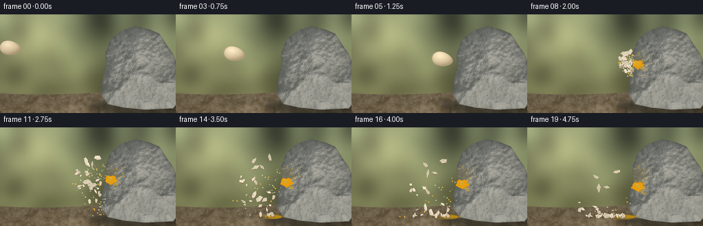

CODING AGENTS AS PIXEL WORLD MODELS
traex/GPT-6.1-Sol · phygen_131
点击播放 · 原生 RGB 像素
逐轮保存的候选
回放视频、检查图与代码变化。
每份候选均可单独播放。实际图片检查记录在下方工具轨迹中。
候选 01播放与检查图
点击播放 · 原生 RGB 像素


展开代码变化
--- 上一保存版本
+++ 本次保存版本
@@ -0,0 +1,242 @@
+from pathlib import Path
+import json, math
+import numpy as np
+from PIL import Image, ImageDraw, ImageFilter
+from scipy.ndimage import gaussian_filter, distance_transform_edt
+import artifact_io
+
+ROOT=Path(__file__).resolve().parent
+SPEC=json.loads((ROOT/'task_spec.json').read_text())
+W,H=SPEC['width'],SPEC['height']; S=3
+WW,HH=W*S,H*S
+rng=np.random.default_rng(131)
+Y,X=np.mgrid[0:HH,0:WW].astype(float); X/=S;Y/=S
+
+def noise(scale,seed):
+ r=np.random.default_rng(seed)
+ a=gaussian_filter(r.standard_normal((HH,WW)),scale*S)
+ return a/(a.std()+1e-8)
+
+def image(a): return Image.fromarray(np.uint8(np.clip(a,0,255)))
+def poly(draw,pts,fill):draw.polygon([(round(x*S),round(y*S)) for x,y in pts],fill=fill)
+def ellipse(draw,box,fill,outline=None,width=1):draw.ellipse(tuple(round(a*S) for a in box),fill=fill,outline=outline,width=round(width*S))
+def line(draw,pts,fill,width=1):draw.line([(round(x*S),round(y*S)) for x,y in pts],fill=fill,width=max(1,round(width*S)))
+
+# Photographic-style out of focus woodland, lit soil, and a rough monolithic stone.
+blur=noise(14,4); bg=(np.array([108,117,88])[None,None,:] + blur[:,:,None]*np.array([17,18,13]))
+bg+= np.exp(-((X-47)**2+(Y-31)**2)/2500)[:,:,None]*np.array([44,39,26])
+bg += (Y/H)[:,:,None]*np.array([8,-1,-13])
+ground=Y>115+2*np.sin(X*.026)
+grain=noise(.22,7); medium=noise(2,8); big=noise(9,9)
+grgb=np.array([105,92,71])+medium[:,:,None]*7+grain[:,:,None]*4+big[:,:,None]*5
+grgb += ((Y-115)/29)[:,:,None]*np.array([12,8,3])
+bg=np.where(ground[:,:,None],grgb,bg)
+base=image(bg)
+d=ImageDraw.Draw(base)
+# Fine grit and small stones give the ground scale.
+for i in range(750):
+ x=rng.uniform(0,256);y=rng.uniform(118,145);r=rng.uniform(.18,1.15)
+ shade=rng.integers(-22,28); col=tuple(int(c+shade) for c in (112,99,78))
+ ellipse(d,(x-r,y-r*.5,x+r,y+r*.5),col)
+ if r>.65: line(d,[(x-r*.5,y-r*.25),(x+r*.4,y-r*.35)],(150,138,114),.24)
+
+# Irregular rock silhouette with a height field; derivatives provide continuous surface lighting.
+rockpoints=[(157,131),(147,116),(149,96),(154,76),(153,58),(161,37),(176,24),(197,17),(218,22),(232,28),(243,45),(252,58),(262,84),(267,119),(252,137),(211,139),(180,136)]
+maskim=Image.new('L',(WW,HH));poly(ImageDraw.Draw(maskim),rockpoints,255)
+mask=np.array(maskim)>0
+# Normalize distance within silhouette to make broken edges bevel naturally.
+dist=distance_transform_edt(mask)/S
+n1=noise(6,15);n2=noise(1.8,16);n3=noise(.45,17);n4=noise(.14,18)
+z=np.sqrt(np.maximum(0,dist))*6.0+1.7*n1+.65*n2+.17*n3
+zy,zx=np.gradient(z,1/S,1/S)
+norm=np.sqrt(1+zx*zx+zy*zy)
+light=np.clip((-.65*zx-.9*zy+1.0)/norm,0,1.4)
+texture=n1*4+n2*3+n3*2+n4*2
+rock=np.array([104,106,101])+light[:,:,None]*np.array([47,45,41])+texture[:,:,None]
+# Fine mineral veins, angular crevices and mica.
+vein=np.exp(-((n1+.2*n2-.3)/.10)**2)
+rock-=vein[:,:,None]*np.array([13,13,12])
+rock+=np.maximum(n3-1.9,0)[:,:,None]*np.array([12,12,11])
+rock-= np.exp(-dist/1.1)[:,:,None]*15
+rockim=image(rock)
+# Ground contact shadow cast by boulder.
+shadow=Image.new('RGBA',(WW,HH)); sd=ImageDraw.Draw(shadow)
+ellipse(sd,(130,123,279,145),(20,24,20,135));shadow=shadow.filter(ImageFilter.GaussianBlur(4*S))
+base=Image.alpha_composite(base.convert('RGBA'),shadow)
+base.paste(rockim,(0,0),maskim)
+# Subtle recognizable geological cracks.
+cracks=Image.new('RGBA',(WW,HH)); cd=ImageDraw.Draw(cracks)
+for pts in [[(199,23),(196,41),(202,58),(199,69)],[(202,58),(214,60),(220,69)],[(235,78),(218,86),(208,104),(211,121)],[(164,45),(174,53),(176,65)],[(159,105),(173,109),(181,119),(183,135)]]:
+ line(cd,[(x+.5,y+.5) for x,y in pts],(196,193,173,50),.7)
+ line(cd,pts,(43,46,41,105),.48)
+cracks.putalpha(Image.fromarray(np.minimum(np.array(cracks.getchannel('A')),np.array(maskim))))
+base=Image.alpha_composite(base,cracks)
+
+# Egg renderer: narrow pointed end faces the rock, shaded ivory shell, micro-speckle.
+def egg_layer(cx,cy,angle=0,alpha=255):
+ dx=X-cx;dy=Y-cy;c=math.cos(angle);s=math.sin(angle)
+ u=(dx*c+dy*s)/15.3;v=(-dx*s+dy*c)/10.3
+ rad=(1-.19*u)
+ rr=u*u+(v/rad)**2
+ sel=rr<=1
+ zz=np.sqrt(np.maximum(0,1-rr))
+ nx=u;ny=v/rad
+ lighting=np.clip(-.38*nx-.50*ny+.76*zz,0,1)
+ col=np.array([179,159,123])+lighting[:,:,None]*np.array([73,73,69])
+ spec=np.exp(-((u+.28)**2+(v+.4)**2)/.075)*10
+ col+=spec[:,:,None]+n4[:,:,None]*.65
+ arr=np.zeros((HH,WW,4),np.uint8);arr[:,:,:3]=np.uint8(np.clip(col,0,255));arr[:,:,3]=sel.astype(np.uint8)*alpha
+ return Image.fromarray(arr)
+
+# Persistent jagged shell fragments have deterministic paths and tumbling orientation.
+fragments=[]
+for i in range(26):
+ size=rng.uniform(1.6,4.5) if i>5 else rng.uniform(4.6,6.6)
+ vxx=rng.uniform(-75,-17);vyy=rng.uniform(-49,32)
+ if i<3:vyy=rng.uniform(-56,-38)
+ ang=rng.uniform(0,6.28)
+ k=rng.integers(4,7)
+ pts=[]
+ for j in range(k):
+ a=j*2*np.pi/k; rr=rng.uniform(.65,1.2)
+ pts.append((math.cos(a)*size*rr,math.sin(a)*size*.68*rr))
+ fragments.append((size,vxx,vyy,ang,rng.uniform(-5,5),pts))
+
+drops=[]
+for i in range(75):
+ a=rng.uniform(-2.55,2.7)
+ # Spray predominantly rebounds away from solid stone.
+ vx=-abs(math.cos(a))*rng.uniform(17,87)-3
+ vy=math.sin(a)*rng.uniform(18,65)
+ drops.append((vx,vy,rng.uniform(.4,1.5),rng.uniform(.4,1.3),i%4==0))
+
+IX,IY=156,70
+impact_frame=6
+
+def fragment_pos(vx,vy,t):
+ # Aerodynamic drag; then inelastic ground collision with a short bounce.
+ k=.65
+ x=IX+vx*(1-math.exp(-k*t))/k
+ y=IY+vy*t+28*t*t
+ tf=(-vy+math.sqrt(vy*vy+4*28*(129-IY)))/(2*28)
+ if t>tf:
+ xf=IX+vx*(1-math.exp(-k*tf))/k
+ dt=t-tf; x=xf+vx*math.exp(-k*tf)*.13*(1-math.exp(-3*dt))/3
+ y=129-abs((vy+56*tf)*.17*dt-28*dt*dt) if dt<.25 else 129
+ return x,y,t>tf
+
+def splat_surface(frame,t):
+ # The crushed yolk flattens against the stone; translucent albumen clings and slowly runs down.
+ if t<0:return frame
+ layer=Image.new('RGBA',(WW,HH)); dd=ImageDraw.Draw(layer)
+ grow=1-math.exp(-6*(t+.09));fall=min(42,max(0,t-.2)*14)
+ # Wet transparent footprint darkens the rough surface instead of obscuring it.
+ pts=[]
+ for j in range(70):
+ a=j/70*2*np.pi;r=1+.15*math.sin(a*7)+.1*math.cos(a*11)
+ pts.append((IX+6+math.cos(a)*12*r*grow,IY+math.sin(a)*13*r*grow))
+ poly(dd,pts,(148,127,65,55))
+ for i in range(8):
+ x=IX+2+i*1.8;y=IY+6+i%3
+ length=fall*(.53+.45*math.sin(i*3)**2)
+ line(dd,[(x,y),(x+.3,y+length*.6),(x-1,y+length)],(186,147,45,93),1.1+i%2*.5)
+ ellipse(dd,(x-1.5,y+length-1,x+.6,y+length+2),(215,167,36,155))
+ line(dd,[(x-.4,y+2),(x-.25,y+length*.8)],(241,218,145,110),.3)
+ yp=IY+min(27,t*9)
+ yolkpts=[]
+ for j in range(60):
+ a=j/60*2*np.pi;r=1+.12*math.sin(a*5)+.07*math.sin(a*9+.5)
+ yolkpts.append((IX+5+math.cos(a)*9*grow*r,yp+math.sin(a)*6.2*grow*r))
+ poly(dd,yolkpts,(239,160,8,245))
+ ellipse(dd,(IX+1,yp-3,IX+8,yp+2),(255,187,18,190))
+ line(dd,[(IX+2,yp-3),(IX+4,yp-3.5),(IX+6,yp-3)],(255,234,151,210),.8)
+ # Surface spray stains appear on the rock at contact.
+ for i in range(22):
+ ar=i*2.399; rr=8+(i%6)*2.4
+ x=IX+5+abs(math.cos(ar))*rr; y=IY+math.sin(ar)*rr
+ sz=.35+(i%3)*.2
+ ellipse(dd,(x-sz,y-sz,x+sz,y+sz),(237,177,39,175))
+ # Preserve the boulder silhouette.
+ la=np.array(layer); la[:,:,3]=(la[:,:,3].astype(float)*(np.array(maskim)/255)).astype(np.uint8)
+ frame=Image.alpha_composite(frame,Image.fromarray(la))
+ # Albumen and yolk accumulate on dirt once spray reaches it.
+ if t>.8:
+ p=min(1,(t-.8)/.9)
+ puddle=Image.new('RGBA',(WW,HH));pd=ImageDraw.Draw(puddle)
+ ellipse(pd,(118-7*p,126,158+5*p,133+2*p),(151,127,63,100))
+ ellipse(pd,(131-4*p,128,153+4*p,133),(210,153,18,215))
+ line(pd,[(123,129),(130,128.7),(137,129)],(245,226,164,165),.55)
+ frame=Image.alpha_composite(frame,puddle)
+ return frame
+
+frames=[]
+for f in range(SPEC['frames']):
+ im=base.copy()
+ if f<impact_frame:
+ # Fast down-right throw, shown in high speed / slow motion close-up.
+ p=f/impact_frame
+ cx=15+141*p; cy=49+13*p+8*p*p
+ sh=Image.new('RGBA',(WW,HH));ds=ImageDraw.Draw(sh)
+ ellipse(ds,(cx-15,126-3*p,cx+15,130),(36,35,24,35+int(p*20)))
+ im=Image.alpha_composite(im,sh.filter(ImageFilter.GaussianBlur(2*S)))
+ # Short directional exposure blur remains subordinate to sharp shell.
+ if f>0:
+ for j in range(3,0,-1): im=Image.alpha_composite(im,egg_layer(cx-j*1.1,cy-j*.15,.12+.1*p,10))
+ im=Image.alpha_composite(im,egg_layer(cx,cy,.12+.1*p))
+ else:
+ t=(f-impact_frame)*.14
+ im=splat_surface(im,t)
+ fluid=Image.new('RGBA',(WW,HH));dd=ImageDraw.Draw(fluid)
+ # Visible radial liquid filaments only while rupture is fresh.
+ if t<.43:
+ for j in range(13):
+ vx,vy,r,_,gold=drops[j]
+ tt=t+.045
+ xe=IX+vx*tt;ye=IY+vy*tt+29*tt*tt
+ pts=[(IX,IY),(IX+vx*tt*.56,IY+vy*tt*.55),(xe,ye)]
+ line(dd,pts,(249,183,22,190) if gold else (232,217,165,140),max(.4,1.3*(1-t/.5)))
+ for vx,vy,r,drag,gold in drops:
+ tt=t+.025
+ x=IX+vx*(1-math.exp(-drag*tt))/drag;y=IY+vy*tt+36*tt*tt
+ if y>131: continue
+ color=(245,181,23,235) if gold else (222,216,179,175)
+ # Stretch moving liquid along its flight direction.
+ ln=max(.4,(1-tt)*1.4)
+ line(dd,[(x-vx/80*ln,y-(vy+72*tt)/80*ln),(x,y)],color,r*1.5)
+ ellipse(dd,(x-r*.65,y-r*.65,x+r*.65,y+r*.65),color)
+ if r>1:ellipse(dd,(x-r*.35,y-r*.5,x,y-r*.1),(255,247,208,185))
+ im=Image.alpha_composite(im,fluid)
+ # Separate cast shadows from shells; fragments never pass intact through the rock.
+ ss=Image.new('RGBA',(WW,HH));sd=ImageDraw.Draw(ss)
+ for sz,vx,vy,a,spin,pts in fragments:
+ x,y,landed=fragment_pos(vx,vy,t+.045)
+ ellipse(sd,(x-sz*.9,130,x+sz*.9,131.7),(31,29,22,90 if landed else 23))
+ im=Image.alpha_composite(im,ss.filter(ImageFilter.GaussianBlur(.65*S)))
+ shell=Image.new('RGBA',(WW,HH));dd=ImageDraw.Draw(shell)
+ for idx,(sz,vx,vy,a,spin,pts) in enumerate(fragments):
+ tt=t+.045; x,y,landed=fragment_pos(vx,vy,tt)
+ aa=a+spin*(min(tt,1.5) if not landed else .9)
+ cs=math.cos(aa);sn=math.sin(aa)
+ foreshorten=.45+.55*abs(math.cos(tt*spin+a))
+ verts=[(x+u*cs-v*sn*foreshorten,y+u*sn+v*cs*foreshorten) for u,v in pts]
+ bright=int(18*math.cos(aa-1))
+ col=(max(0,226+bright),max(0,213+bright),max(0,187+bright),255)
+ poly(dd,[(xx+.45,yy+.7) for xx,yy in verts],(127,104,73,255))
+ poly(dd,verts,col)
+ line(dd,verts[:3],(252,241,215,255),.5)
+ if sz>4:
+ mid=[(x+(xx-x)*.62,y+(yy-y)*.62) for xx,yy in verts]
+ line(dd,mid[:3],(184,163,127,145),.42)
+ im=Image.alpha_composite(im,shell)
+ if f==impact_frame:
+ # A few larger shell panels still at the contact point as the egg collapses.
+ dl=ImageDraw.Draw(im)
+ poly(dl,[(144,61),(151,59),(155,61),(151,65),(145,66)],(242,229,200,255))
+ poly(dl,[(145,76),(151,73),(158,75),(152,80),(147,80)],(210,190,151,255))
+ # Subtle optical vignette, fine film-like grain, stable camera.
+ ar=np.asarray(im.convert('RGB')).astype(float)
+ vig=1-.10*((X-126)/172)**2-.07*((Y-65)/108)**2
+ ar*=vig[:,:,None]
+ frames.append(np.asarray(image(ar).resize((W,H),Image.Resampling.LANCZOS)))
+artifact_io.save(np.stack(frames).astype(np.uint8),ROOT)
+print('Saved',len(frames),'RGB frames')
可观测工具轨迹
实际执行的命令与返回图片。
命令 1exit 0
/bin/bash -lc 'ls -la && cat prompt.txt && cat GENERATION_RULES.md && cat task_spec.json'
命令 2exit 0
/bin/bash -lc "cat artifact_io.py && python - <<'PY'
import numpy,PIL
print('numpy and PIL ready')
try:
import scipy
print('scipy', scipy.__version__)
except: pass
PY"命令 3exit 0
/bin/bash -lc "cat > generate.py <<'PY'
from pathlib import Path
import json, math
import numpy as np
from PIL import Image, ImageDraw, ImageFilter
from scipy.ndimage import gaussian_filter, distance_transform_edt
import artifact_io
ROOT=Path(__file__).resolve().parent
SPEC=json.loads((ROOT/'task_spec.json').read_text())
W,H=SPEC['width'],SPEC['height']; S=3
WW,HH=W*S,H*S
rng=np.random.default_rng(131)
Y,X=np.mgrid[0:HH,0:WW].astype(float); X/=S;Y/=S
def noise(scale,seed):
r=np.random.default_rng(seed)
a=gaussian_filter(r.standard_normal((HH,WW)),scale*S)
return a/(a.std()+1e-8)
def image(a): return Image.fromarray(np.uint8(np.clip(a,0,255)))
def poly(draw,pts,fill):draw.polygon([(round(x*S),round(y*S)) for x,y in pts],fill=fill)
def ellipse(draw,box,fill,outline=None,width=1):draw.ellipse(tuple(round(a*S) for a in box),fill=fill,outline=outline,width=round(width*S))
def line(draw,pts,fill,width=1):draw.line([(round(x*S),round(y*S)) for x,y in pts],fill=fill,width=max(1,round(width*S)))
# Photographic-style out of focus woodland, lit soil, and a rough monolithic stone.
blur=noise(14,4); bg=(np.array([108,117,88])[None,None,:] + blur[:,:,None]*np.array([17,18,13]))
bg+= np.exp(-((X-47)**2+(Y-31)**2)/2500)[:,:,None]*np.array([44,39,26])
bg += (Y/H)[:,:,None]*np.array([8,-1,-13])
ground=Y>115+2*np.sin(X*.026)
grain=noise(.22,7); medium=noise(2,8); big=noise(9,9)
grgb=np.array([105,92,71])+medium[:,:,None]*7+grain[:,:,None]*4+big[:,:,None]*5
grgb += ((Y-115)/29)[:,:,None]*np.array([12,8,3])
bg=np.where(ground[:,:,None],grgb,bg)
base=image(bg)
d=ImageDraw.Draw(base)
# Fine grit and small stones give the ground scale.
for i in range(750):
x=rng.uniform(0,256);y=rng.uniform(118,145);r=rng.uniform(.18,1.15)
shade=rng.integers(-22,28); col=tuple(int(c+shade) for c in (112,99,78))
ellipse(d,(x-r,y-r*.5,x+r,y+r*.5),col)
if r>.65: line(d,[(x-r*.5,y-r*.25),(x+r*.4,y-r*.35)],(150,138,114),.24)
# Irregular rock silhouette with a height field; derivatives provide continuous surface lighting.
rockpoints=[(157,131),(147,116),(149,96),(154,76),(153,58),(161,37),(176,24),(197,17),(218,22),(232,28),(243,45),(252,58),(262,84),(267,119),(252,137),(211,139),(180,136)]
maskim=Image.new('L',(WW,HH));poly(ImageDraw.Draw(maskim),rockpoints,255)
mask=np.array(maskim)>0
# Normalize distance within silhouette to make broken edges bevel naturally.
dist=distance_transform_edt(mask)/S
n1=noise(6,15);n2=noise(1.8,16);n3=noise(.45,17);n4=noise(.14,18)
z=np.sqrt(np.maximum(0,dist))*6.0+1.7*n1+.65*n2+.17*n3
zy,zx=np.gradient(z,1/S,1/S)
norm=np.sqrt(1+zx*zx+zy*zy)
light=np.clip((-.65*zx-.9*zy+1.0)/norm,0,1.4)
texture=n1*4+n2*3+n3*2+n4*2
rock=np.array([104,106,101])+light[:,:,None]*np.array([47,45,41])+texture[:,:,None]
# Fine mineral veins, angular crevices and mica.
vein=np.exp(-((n1+.2*n2-.3)/.10)**2)
rock-=vein[:,:,None]*np.array([13,13,12])
rock+=np.maximum(n3-1.9,0)[:,:,None]*np.array([12,12,11])
rock-= np.exp(-dist/1.1)[:,:,None]*15
rockim=image(rock)
# Ground contact shadow cast by boulder.
shadow=Image.new('RGBA',(WW,HH)); sd=ImageDraw.Draw(shadow)
ellipse(sd,(130,123,279,145),(20,24,20,135));shadow=shadow.filter(ImageFilter.GaussianBlur(4*S))
base=Image.alpha_composite(base.convert('RGBA'),shadow)
base.paste(rockim,(0,0),maskim)
# Subtle recognizable geological cracks.
cracks=Image.new('RGBA',(WW,HH)); cd=ImageDraw.Draw(cracks)
for pts in [[(199,23),(196,41),(202,58),(199,69)],[(202,58),(214,60),(220,69)],[(235,78),(218,86),(208,104),(211,121)],[(164,45),(174,53),(176,65)],[(159,105),(173,109),(181,119),(183,135)]]:
line(cd,[(x+.5,y+.5) for x,y in pts],(196,193,173,50),.7)
line(cd,pts,(43,46,41,105),.48)
cracks.putalpha(Image.fromarray(np.minimum(np.array(cracks.getchannel('A')),np.array(maskim))))
base=Image.alpha_composite(base,cracks)
# Egg renderer: narrow pointed end faces the rock, shaded ivory shell, micro-speckle.
def egg_layer(cx,cy,angle=0,alpha=255):
dx=X-cx;dy=Y-cy;c=math.cos(angle);s=math.sin(angle)
u=(dx*c+dy*s)/15.3;v=(-dx*s+dy*c)/10.3
rad=(1-.19*u)
rr=u*u+(v/rad)**2
sel=rr<=1
zz=np.sqrt(np.maximum(0,1-rr))
nx=u;ny=v/rad
lighting=np.clip(-.38*nx-.50*ny+.76*zz,0,1)
col=np.array([179,159,123])+lighting[:,:,None]*np.array([73,73,69])
spec=np.exp(-((u+.28)**2+(v+.4)**2)/.075)*10
col+=spec[:,:,None]+n4[:,:,None]*.65
arr=np.zeros((HH,WW,4),np.uint8);arr[:,:,:3]=np.uint8(np.clip(col,0,255));arr[:,:,3]=sel.astype(np.uint8)*alpha
return Image.fromarray(arr)
# Persistent jagged shell fragments have deterministic paths and tumbling orientation.
fragments=[]
for i in range(26):
size=rng.uniform(1.6,4.5) if i>5 else rng.uniform(4.6,6.6)
vxx=rng.uniform(-75,-17);vyy=rng.uniform(-49,32)
if i<3:vyy=rng.uniform(-56,-38)
ang=rng.uniform(0,6.28)
k=rng.integers(4,7)
pts=[]
for j in range(k):
a=j*2*np.pi/k; rr=rng.uniform(.65,1.2)
pts.append((math.cos(a)*size*rr,math.sin(a)*size*.68*rr))
fragments.append((size,vxx,vyy,ang,rng.uniform(-5,5),pts))
drops=[]
for i in range(75):
a=rng.uniform(-2.55,2.7)
# Spray predominantly rebounds away from solid stone.
vx=-abs(math.cos(a))*rng.uniform(17,87)-3
vy=math.sin(a)*rng.uniform(18,65)
drops.append((vx,vy,rng.uniform(.4,1.5),rng.uniform(.4,1.3),i%4==0))
IX,IY=156,70
impact_frame=6
def fragment_pos(vx,vy,t):
# Aerodynamic drag; then inelastic ground collision with a short bounce.
k=.65
x=IX+vx*(1-math.exp(-k*t))/k
y=IY+vy*t+28*t*t
tf=(-vy+math.sqrt(vy*vy+4*28*(129-IY)))/(2*28)
if t>tf:
xf=IX+vx*(1-math.exp(-k*tf))/k
dt=t-tf; x=xf+vx*math.exp(-k*tf)*.13*(1-math.exp(-3*dt))/3
y=129-abs((vy+56*tf)*.17*dt-28*dt*dt) if dt<.25 else 129
return x,y,t>tf
def splat_surface(frame,t):
# The crushed yolk flattens against the stone; translucent albumen clings and slowly runs down.
if t<0:return frame
layer=Image.new('RGBA',(WW,HH)); dd=ImageDraw.Draw(layer)
grow=1-math.exp(-6*(t+.09));fall=min(42,max(0,t-.2)*14)
# Wet transparent footprint darkens the rough surface instead of obscuring it.
pts=[]
for j in range(70):
a=j/70*2*np.pi;r=1+.15*math.sin(a*7)+.1*math.cos(a*11)
pts.append((IX+6+math.cos(a)*12*r*grow,IY+math.sin(a)*13*r*grow))
poly(dd,pts,(148,127,65,55))
for i in range(8):
x=IX+2+i*1.8;y=IY+6+i%3
length=fall*(.53+.45*math.sin(i*3)**2)
line(dd,[(x,y),(x+.3,y+length*.6),(x-1,y+length)],(186,147,45,93),1.1+i%2*.5)
ellipse(dd,(x-1.5,y+length-1,x+.6,y+length+2),(215,167,36,155))
line(dd,[(x-.4,y+2),(x-.25,y+length*.8)],(241,218,145,110),.3)
yp=IY+min(27,t*9)
yolkpts=[]
for j in range(60):
a=j/60*2*np.pi;r=1+.12*math.sin(a*5)+.07*math.sin(a*9+.5)
yolkpts.append((IX+5+math.cos(a)*9*grow*r,yp+math.sin(a)*6.2*grow*r))
poly(dd,yolkpts,(239,160,8,245))
ellipse(dd,(IX+1,yp-3,IX+8,yp+2),(255,187,18,190))
line(dd,[(IX+2,yp-3),(IX+4,yp-3.5),(IX+6,yp-3)],(255,234,151,210),.8)
# Surface spray stains appear on the rock at contact.
for i in range(22):
ar=i*2.399; rr=8+(i%6)*2.4
x=IX+5+abs(math.cos(ar))*rr; y=IY+math.sin(ar)*rr
sz=.35+(i%3)*.2
ellipse(dd,(x-sz,y-sz,x+sz,y+sz),(237,177,39,175))
# Preserve the boulder silhouette.
la=np.array(layer); la[:,:,3]=(la[:,:,3].astype(float)*(np.array(maskim)/255)).astype(np.uint8)
frame=Image.alpha_composite(frame,Image.fromarray(la))
# Albumen and yolk accumulate on dirt once spray reaches it.
if t>.8:
p=min(1,(t-.8)/.9)
puddle=Image.new('RGBA',(WW,HH));pd=ImageDraw.Draw(puddle)
ellipse(pd,(118-7*p,126,158+5*p,133+2*p),(151,127,63,100))
ellipse(pd,(131-4*p,128,153+4*p,133),(210,153,18,215))
line(pd,[(123,129),(130,128.7),(137,129)],(245,226,164,165),.55)
frame=Image.alpha_composite(frame,puddle)
return frame
frames=[]
for f in range(SPEC['frames']):
im=base.copy()
if f<impact_frame:
# Fast down-right throw, shown in high speed / slow motion close-up.
p=f/impact_frame
cx=15+141*p; cy=49+13*p+8*p*p
sh=Image.new('RGBA',(WW,HH));ds=ImageDraw.Draw(sh)
ellipse(ds,(cx-15,126-3*p,cx+15,130),(36,35,24,35+int(p*20)))
im=Image.alpha_composite(im,sh.filter(ImageFilter.GaussianBlur(2*S)))
# Short directional exposure blur remains subordinate to sharp shell.
if f>0:
for j in range(3,0,-1): im=Image.alpha_composite(im,egg_layer(cx-j*1.1,cy-j*.15,.12+.1*p,10))
im=Image.alpha_composite(im,egg_layer(cx,cy,.12+.1*p))
else:
t=(f-impact_frame)*.14
im=splat_surface(im,t)
fluid=Image.new('RGBA',(WW,HH));dd=ImageDraw.Draw(fluid)
# Visible radial liquid filaments only while rupture is fresh.
if t<.43:
for j in range(13):
vx,vy,r,_,gold=drops[j]
tt=t+.045
xe=IX+vx*tt;ye=IY+vy*tt+29*tt*tt
pts=[(IX,IY),(IX+vx*tt*.56,IY+vy*tt*.55),(xe,ye)]
line(dd,pts,(249,183,22,190) if gold else (232,217,165,140),max(.4,1.3*(1-t/.5)))
for vx,vy,r,drag,gold in drops:
tt=t+.025
x=IX+vx*(1-math.exp(-drag*tt))/drag;y=IY+vy*tt+36*tt*tt
if y>131: continue
color=(245,181,23,235) if gold else (222,216,179,175)
# Stretch moving liquid along its flight direction.
ln=max(.4,(1-tt)*1.4)
line(dd,[(x-vx/80*ln,y-(vy+72*tt)/80*ln),(x,y)],color,r*1.5)
ellipse(dd,(x-r*.65,y-r*.65,x+r*.65,y+r*.65),color)
if r>1:ellipse(dd,(x-r*.35,y-r*.5,x,y-r*.1),(255,247,208,185))
im=Image.alpha_composite(im,fluid)
# Separate cast shadows from shells; fragments never pass intact through the rock.
ss=Image.new('RGBA',(WW,HH));sd=ImageDraw.Draw(ss)
for sz,vx,vy,a,spin,pts in fragments:
x,y,landed=fragment_pos(vx,vy,t+.045)
ellipse(sd,(x-sz*.9,130,x+sz*.9,131.7),(31,29,22,90 if landed else 23))
im=Image.alpha_composite(im,ss.filter(ImageFilter.GaussianBlur(.65*S)))
shell=Image.new('RGBA',(WW,HH));dd=ImageDraw.Draw(shell)
for idx,(sz,vx,vy,a,spin,pts) in enumerate(fragments):
tt=t+.045; x,y,landed=fragment_pos(vx,vy,tt)
aa=a+spin*(min(tt,1.5) if not landed else .9)
cs=math.cos(aa);sn=math.sin(aa)
foreshorten=.45+.55*abs(math.cos(tt*spin+a))
verts=[(x+u*cs-v*sn*foreshorten,y+u*sn+v*cs*foreshorten) for u,v in pts]
bright=int(18*math.cos(aa-1))
col=(max(0,226+bright),max(0,213+bright),max(0,187+bright),255)
poly(dd,[(xx+.45,yy+.7) for xx,yy in verts],(127,104,73,255))
poly(dd,verts,col)
line(dd,verts[:3],(252,241,215,255),.5)
if sz>4:
mid=[(x+(xx-x)*.62,y+(yy-y)*.62) for xx,yy in verts]
line(dd,mid[:3],(184,163,127,145),.42)
im=Image.alpha_composite(im,shell)
if f==impact_frame:
# A few larger shell panels still at the contact point as the egg collapses.
dl=ImageDraw.Draw(im)
poly(dl,[(144,61),(151,59),(155,61),(151,65),(145,66)],(242,229,200,255))
poly(dl,[(145,76),(151,73),(158,75),(152,80),(147,80)],(210,190,151,255))
# Subtle optical vignette, fine film-like grain, stable camera.
ar=np.asarray(im.convert('RGB')).astype(float)
vig=1-.10*((X-126)/172)**2-.07*((Y-65)/108)**2
ar*=vig[:,:,None]
frames.append(np.asarray(image(ar).resize((W,H),Image.Resampling.LANCZOS)))
artifact_io.save(np.stack(frames).astype(np.uint8),ROOT)
print('Saved',len(frames),'RGB frames')
PY
python generate.py"视觉工具实际返回图片 1

保存候选 1 份；完成命令 3 次；可验证图片返回 1 张。原始 API 响应与完整日志保留在本地。